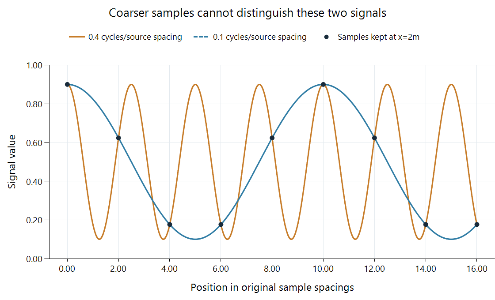

Spatial Aliasing in Video
Spatial aliasing occurs when a sample grid represents fine picture variation as a different, often coarser pattern.
A fine fence, striped shirt, or tiled roof can acquire a broad wave pattern when a video is reduced. The resulting waves are not merely a blur of the original texture. The coarser sample grid has represented its fine variation as a different pattern: spatial aliasing.
An Emby app resizing a frame to its viewport and a server producing a smaller encoded frame both encounter this sampling problem. It can also arise earlier, during camera sampling or previous conversions. Locating the grid reduction helps locate the cause of the visible pattern.
Two signals with the same retained samples
Consider the normalized scalar signal:
high(x) = 0.5 + 0.4 cos(2π × 0.4x).
It has 0.4 cycles per original sample spacing. Its variation can be represented on the original unit-spaced grid, whose Nyquist limit is 0.5 cycles per spacing.
Now retain only samples at x = 2m, where m is an integer. The new grid has half the spatial sampling rate. Its Nyquist limit, expressed in original coordinates, is 0.25 cycles per original spacing. Our 0.4-cycle variation is above that limit.

The black dots are samples retained at every second original position. Both curves pass through those dots. This isolates sampling ambiguity rather than simulating a particular scaler.
A second signal is:
low(x) = 0.5 + 0.4 cos(2π × 0.1x).
At the retained positions, both produce the same values:
| m | Source position 2m | high(2m) and low(2m) |
|---|---|---|
| 0 | 0 | 0.9 |
| 1 | 2 | 0.623607 |
| 2 | 4 | 0.176393 |
| 3 | 6 | 0.176393 |
| 4 | 8 | 0.623607 |
| 5 | 10 | 0.9 |
For high, the phase per output index is 0.8 cycles. On an integer-indexed grid, that cosine is equivalent to a −0.2-cycle cosine; cosine's even symmetry makes it the +0.2-cycle pattern. Low produces exactly +0.2 cycles per output index too.
The output samples therefore support an apparent period of five output spacings, even though the original fine signal varied at a different frequency. A reconstruction stage given only those samples cannot choose uniquely between the two candidate sources.
Filtering before the grid becomes coarser
A downscaler suppresses variation that the destination cannot represent before placing the coarser samples. A wider low-pass footprint uses more of the source area associated with each destination value.
The alternating row 0, 1, 0, 1, ... provides a compact special case. Taking every second point gives a uniform 0 or 1 depending on phase. Averaging each corresponding pair gives 0.5, removing that alternation before reducing the sample count.
General textures need more than that particular pair-average example. A finite filter has a frequency response with a transition region rather than an ideal sharp cutoff. The reduction ratio, footprint width, and permitted work determine how much unwanted high-frequency structure reaches the output.
Interpolating more smoothly after the coarse samples have acquired the five-spacing pattern cannot determine that the original was the high curve. The ambiguity was created at sampling. It needs to be controlled at that boundary.
Why the pattern changes during motion
Fine structure can move by a fraction of a source spacing from frame to frame. That changes which parts of it land on the output sampling positions. An aliased texture can consequently shimmer, change apparent orientation, or produce crawling patterns during a pan.
The temporal change comes from repeated spatial decisions at different phases. A frozen frame shows one phase; the sequence makes the instability more obvious. Comparing a fence throughout a slow pan can therefore reveal aliasing that a single screenshot understates.
Two-dimensional sampling extends the same ambiguity to lines and grids in different directions. Their interference with the picture's sampling lattice can form moiré. Chroma has a separate, often coarser lattice, so chroma reduction can introduce color-specific aliasing even when luma structure is retained.
Aliasing, ringing, and missing detail
Loss of very fine detail after a reduction can be the intended low-pass result. Aliasing instead creates a misleading surviving pattern. Ringing is an oscillating edge response and can be present without a repeating source texture. These distinctions help interpret what a comparison is testing.
For the plotted example, a suitable reduction must control the 0.4-cycle variation relative to the new 0.25-cycle limit. Retaining it unfiltered makes the 0.1-cycle candidate indistinguishable at the output samples, producing the apparent five-sample period calculated above.